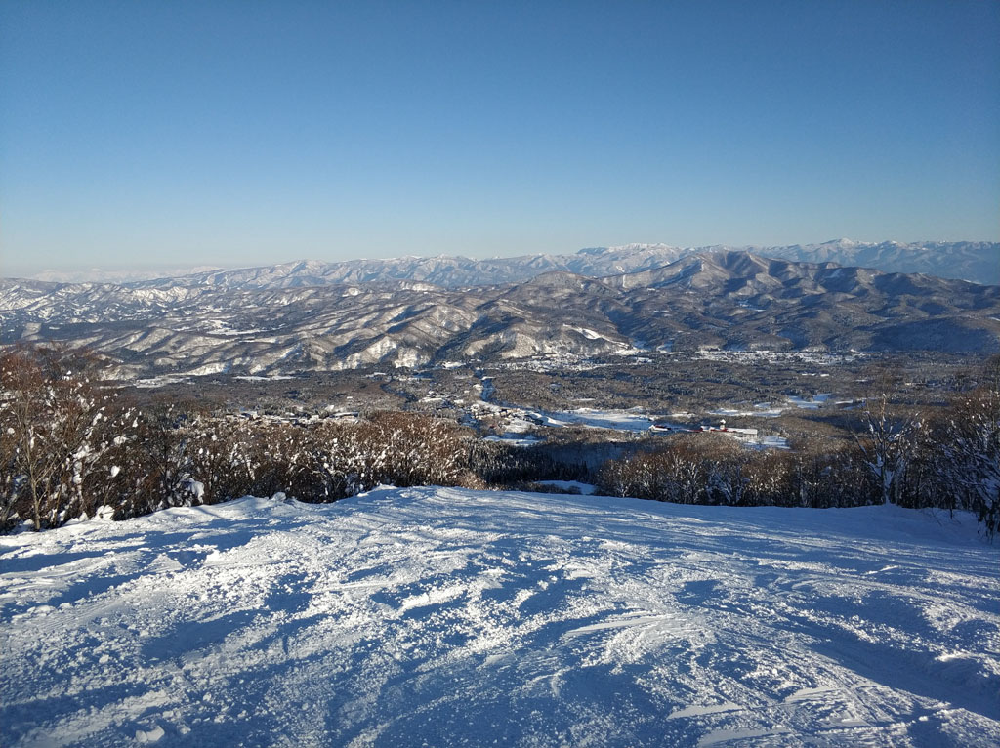

- 時間 : 2018.12.29 ~ 2019.01.06
- 住宿地點 : 妙高高原 赤倉溫泉
這次滑雪玩法很像是去年去白馬的玩法，每天都會搭公車去選擇一個雪場，然後看地圖去開全山，認真體驗每一個雪場的特色和玩法。而妙高的雪場並沒有讓我們失望，果然真的都很有特色雪質也真的非常好。

雪場
這次主要的幾個雪場
赤倉溫泉
基本上這個雪場的難易度算是最簡單的，也是我們學習Carving的地方，雪道都蠻平易近人的，蠻適合前幾天熱身以及練基本動作。赤倉觀光滑雪場
這個雪場看得出來，非常適合全家大小出遊的雪場，也算的上是妙高高原地區平易近人的滑雪場，搭Gondola可以很快就接近山頂，從上面滑下來也可以體驗長滑道的快感。(上方有一條黑線，因為照不到太陽，已變成冰面，超硬的 !!!)
然後赤倉觀光和赤倉溫泉之間都有連通道，可以互相來回，連通道也不會太平，也算是蠻好移動的。
池之平滑雪場
這個雪場可以分成左半邊和右半邊，然後都有一個共同的特色就是”雪道非常寬”，玩起來很有留壽都的感覺，有一種搭一條纜車就可以上山頂，然後一路滑道山腳，接著又搭纜車到山頂，選擇另一條路線，還是可以到山腳。而且中間都會有一些支線去嘗試，是我很喜歡玩的一種滑法。
杉之原滑雪場
杉之原基本上，可以直接說是妙高區域視野最好的雪場，在萬里晴空的狀況下，還可以看到富士山，而妙高區域最長的滑道也在這裡。這個雪場還有一個特色，食堂特別好吃。
斑尾高原
斑尾高原車程離妙高高原約一個小時，每天來回只有各一班公車，錯過就不用去了。這個雪場非常得大，而且難度也偏高，樹林區非常的多，很適合進階的玩家過來挑戰。第五天的時候，我們特地搭車到這個雪場，一整天一直跑各個樹林，特別推薦”SAWA”這個滑道，實在太棒了，有一種一直在雪中的滑水道一直衝的感覺，很有特色。
溫泉街&餐廳
基本上，這個雪場的生活品質，我覺得並不算太好(跟其他日本各個滑雪區域比較)，比較可以特別提起的，應該是當地有一種叫做”寒作里”的辣椒醬，特別有特色，可以當作伴手禮。
結論
整體來講，如果是想要享受邊滑雪邊度假的話，日本應該其他更好的雪場可以選擇。但如果是想要享受滑雪道的豐富性，及滑雪過程中的快感的中級以上玩家，妙高高原真的是非常棒的一個選擇。